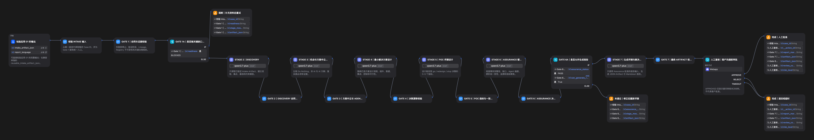

Intake Artifact
包含结构化事实、证据注册表、阶段和信息覆盖状态。
caseId · schemaVersion · evidenceRegistry将模糊的客户需求与业务信息，自动整理为结构化需求分析、方案建议与评估报告，帮助售前更快形成可讨论、可验证的解决方案初稿。
黄金测试样本：覆盖完整需求、信息缺失、需求冲突、高风险、RAG、Agent、异常输入等典型场景，用于验证 AI 方案助手在不同业务条件下的稳定性、判断能力与可落地性
真实调用 AI 服务完成端到端流程，主要流程、异常情况和输出规则均符合预期
WORKFLOW DEMO
输入：客户需求与现有材料
处理：结构化分析、AI 机会判断、方案报告编排
输出：推荐实施路径、可复核结论、待确认事项
01 / REPRESENTATIVE RESULT
代表性证据均来自脱敏合成样本；展示稳定字段，不展示完整 LLM 长文本。
包含结构化事实、证据注册表、阶段和信息覆盖状态。
caseId · schemaVersion · evidenceRegistry规则节点检查结构、Lineage、阶段顺序与 evidenceRefs；不合格即安全失败或阻断。
blocked_* · revision_* · approved_*正常主链通过 Assurance 后暂停在人审节点，人工批准或退回并留痕。
human_review · awaiting_action02 / WORKFLOW DESIGN
同一条链路同时回答“产出什么”和“谁有权确认它”。
Intake JSON + 报告语言
LLM 生成阶段候选 Artifact
规则检查 Schema、Lineage、证据
批准或退回，不自动对客发布
真实 Dify 主链的静态示意，不是控制台截图

生成阶段候选 Artifact；不拥有最终授权。
标准化输入，校验结构、阶段、Lineage、Gate 与 evidenceRefs。
核验证据、假设、风险与对客措辞；批准或退回留痕。
03 / VERIFIED EVIDENCE
全部指标来自既有真实回归报告；样本状态保持 Synthetic / human_review_pending。
LATENCY AUDIT
平均 — · P50 — · P95 —
快速阻断/失败样本形成低位分布；两条包含多阶段 LLM 的正常主链形成长尾。该分布不是性能优势，性能仍待生产负载验证。
04 / ENGINEERING RETROSPECTIVE
阶段闭环：Smoke → Golden Set → 失败分析 → 展示证据。
统一完整 Artifact 与 reusable wrapper，格式不合法时在入口安全失败。
只接受原生数组或合法 JSON 数组字符串；null、Markdown、未登记 ID 明确拒绝。
每条调用记录 Run ID、状态、断言和错误摘要；关键分支额外重复验证一致性。
05 / BOUNDARY & NEXT STEP
当前AI需求解决方案分析poc 可接入生产环境